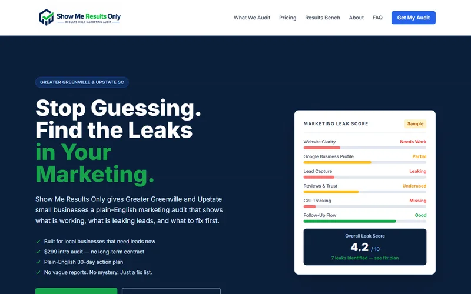
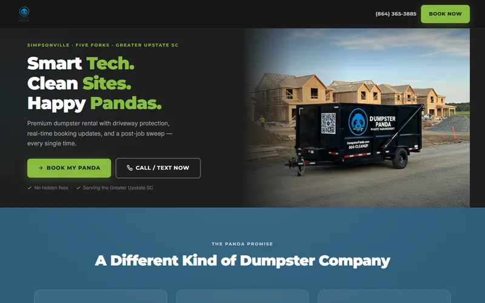
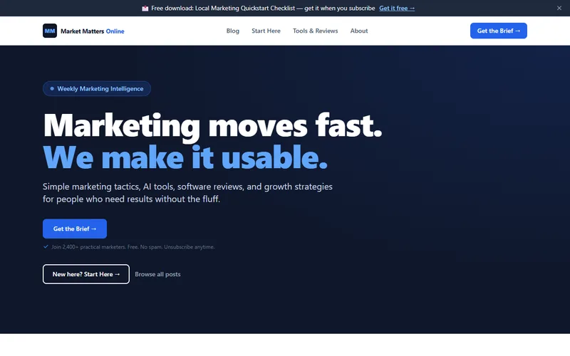
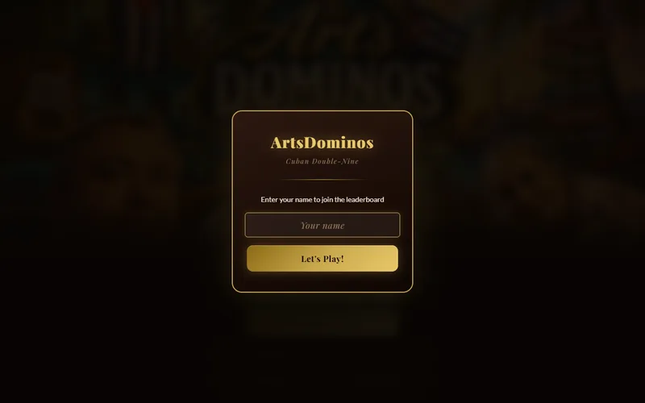
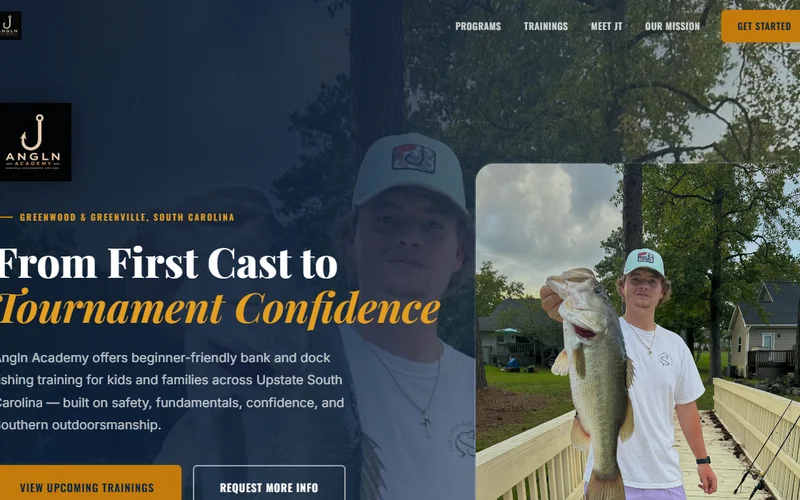
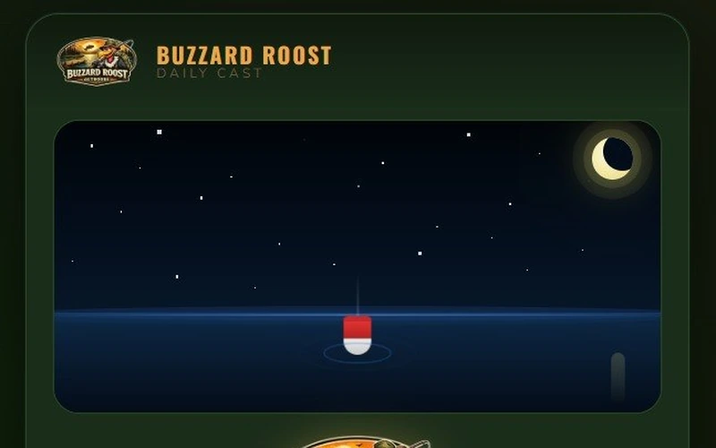

Welcome to johnsuchjr.com
Futurist.
Marketer.
Builder.
25+ years at the intersection of technology, marketing, and what's next. Based in Simpsonville, SC.

Who I Am
About Me
I have always been drawn to the space between what was, what is, and what could be. I love history because it reminds us that people have always been figuring things out as they go. I love technology because it gives us new tools to solve old problems. I love AI because it feels like we are standing at the edge of something huge.
I am not interested in technology for technology's sake. I am interested in what it can unlock. Can it help a small business look bigger than it is? Can it help a team do more with less? Can it take the repetitive work off someone's plate so they can actually think again?
That is the part that fires me up.
My professional world lives inside the technology channel, where vendors, distributors, resellers, solution providers, and customers connect in this giant ecosystem that most people never see. It is not always flashy, but it is the plumbing behind a lot of what keeps modern business moving.
Part futurist. Part marketer. Part storyteller. Part history nerd. Part dad. Part builder. Part guy who has too many ideas and not enough hours, but keeps going anyway.
Welcome to johnsuchjr.com. Pull up a chair by the fire.
Things I Care About
Find Me Online
Let's Connect
Find me where I actually spend time online. I share professional thinking on LinkedIn, connect personally on Facebook, and post moments on Instagram.
johnsuchjr
Professional work, channel marketing, AI thinking, and career updates.
Visit Profile →john.such
Personal updates, family life, and the things that matter when the work is done.
Visit Profile →ccherosc
Photos and moments from life, projects, and the occasional Renaissance faire.
Visit Profile →The Important Stuff
Family & Life
Some things matter more than the work. Yve is my wife and the grounding force that keeps this whole operation running with grace. She is patient, sharp, and better at most things than I give her credit for.
JT and Bryson are my boys. They remind me every day why the future is worth thinking about. Watching them figure out the world is one of the best things I get to do.
We are based in Simpsonville, South Carolina. Life here is good. The best parts of my day happen at home.
I try to keep work in its lane so there is space for the things that do not show up on a resume. Family dinners. Weekend adventures. Being present instead of just physically nearby.
Not always perfect at it. Always trying.
Based in Simpsonville, SC. Blessed with good people.
Experience
Resume & Career
25+ years in the technology channel. Channel marketing, digital strategy, AI, and business development. Built programs. Grew revenue. Led teams. Never stopped building.
John Such - 2026 Resume
Full career history, key achievements, and highlights, formatted for easy reading.
What I Build
Projects
Some people collect stamps. I collect ideas, half-built worlds, websites, experiments, and the occasional digital rabbit hole that turns into something real. Build it. Learn from it. Make it better. Keep moving.

Show Me Results Only
A practical marketing audit for small businesses. Stop drowning owners in vague language and show them what needs to be fixed first. No fluff. Just the stuff that moves the needle.
showmeresultsonly.com →
Panda Dumpsters
A client site for a local dumpster rental business. Made it feel professional, trustworthy, and easy to book. Because even dumpster rental deserves a good website.
pandadumpsters.com →
Market Matters Online
A marketing blog for people who want help without the corporate fog machine. Practical AI, automation, SEO, and growth tactics that real businesses can use.
marketmattersonline.com →Golden Strip Unite
A community platform for Simpsonville, Mauldin, and Fountain Inn. Good people are everywhere. Good intentions need a place to land. This is that place.
goldenstripunite.com →
Art's Dominos
A Cuban Double-Nine domino game built around family, culture, and the kind of table energy that turns a simple game into a memory. Team play, stats, leaderboards.
Play Now →
Angln
A fishing-centered concept about more than fishing. Patience, skill, reading conditions, and knowing when to cast. A strong metaphor for business, marketing, and life.
angln.com →
Buzzard Roost Daily Cast
A daily fishing game concept built around quick play and repeat engagement. Cast. Catch. Compare. Come back tomorrow. Could also become a marketing engine for fishing brands.
Play Now →Frequently Asked
Questions I Get Asked a Lot
I've spent 25+ years helping companies explain complicated technology to the people who need to use it. Started in sales, moved into marketing, built a consulting practice, came back, never stopped building things on the side. The thread is always the same: technology, communication, and the humans trying to figure out what to do with both.
Channel marketing inside the technology industry. I sit in the middle of a massive ecosystem - vendors, distributors, resellers, partners - and help make sense of it. Programs that drive revenue. Platforms that create efficiency. Plans that translate into action. Less flashy than it sounds. More important than most people realize.
I tell them it's not going to replace them. It's going to replace the parts of their job they hate - the repetitive stuff, the first drafts, the formatting, the summaries. What it can't replace is judgment, relationships, and the ability to ask the right question. That's where the real work lives.
Stop trying to look like you know what you're doing and start focusing on actually knowing what you're doing. The reputation follows. Not the other way around.
Started in sales. Got tired of pitching things without being able to shape the story first. Marketing let me do that. Eventually I realized the story wasn't just a part of the business. It was the whole game.
A mix of strategic planning, cross-functional coordination, writing, reviewing data, and figuring out what actually needs to happen versus what people think needs to happen. There's always a gap between those two things. That gap is usually where the real work is.
Built my own projects sooner. I spent years helping other companies build things and didn't put the same energy into my own ideas until later. Don't wait for permission. Nobody's coming to give it to you.
I actually use it. Not just read about it. I'm building workflows, testing tools, running experiments, and regularly failing at things. Reading about AI is fine. Building something with it is a different education entirely.
Clear on the goal, out of the way on execution. I push back when something doesn't add up. I ask a lot of questions. I care about the work and expect the same. If you need me to define every step for you, we're going to have a hard time.
The ones where the answer isn't obvious yet. Where you have to connect dots from different directions, bring in the right people, and build something that didn't exist before. I'm not great at problems that are already solved. I'm much better at the first version of something new.
Imperfectly. Intentionally. I have two boys and a wife who handles a lot of half-finished ideas with grace. We protect the important stuff - dinner, weekends when possible, being present instead of just nearby. Work will always ask for more than you can give it. You have to decide what the floor is before it gets decided for you.
Professionally: building a digital marketing practice that generated $2M in year one, and the AI platform I'm working on now that's projected to save real hours and real money. Personally: Art's Dominos, because it's built around family culture and still makes me smile every time I play it.
Claude, ChatGPT, Cursor, VS Code, Google Workspace. The AI tools are doing real work now, not impressive demos. If you're not actively using them, you're already behind.
I don't think of it as a brand. I think of it as showing what you actually believe, consistently, over time. The people who do this well aren't performing. They're just sharing a real perspective and letting the reputation accumulate on its own.
Building things that matter to people I respect. Work that's hard enough to stay interesting. Enough margin in life to be present for my family. Not being the smartest person in the room, but being useful in it.
Build something with it. I don't learn well from courses alone. I learn by doing something real and hitting the wall. The understanding lives on the other side of where it stopped working.
Stop first. Figure out why - is it the strategy, the execution, or the premise? Those are three different problems with three different fixes. Most people try to fix execution when the premise was wrong from the start. Diagnose before you solve.
Curious people who argue well. Who push back with evidence, not just opinions. Who can disagree and still move. Who care about the outcome more than being right. That combination is rarer than it should be and worth more than almost anything else.
Deeper into work that used to require whole teams. Not replacing judgment, but compressing the gap between idea and output. The companies that learn to use it as leverage, not just cost reduction, will look completely different from the ones that don't. Five years is going to feel like a decade.
I love history. Not in a textbook way. In a "why did people make the choices they made, and what does that tell us about right now" way. Ancient civilizations, medieval culture, biblical history, Renaissance fairs. I find it all genuinely fascinating. Same instinct as the tech stuff, just pointed backwards instead of forward.